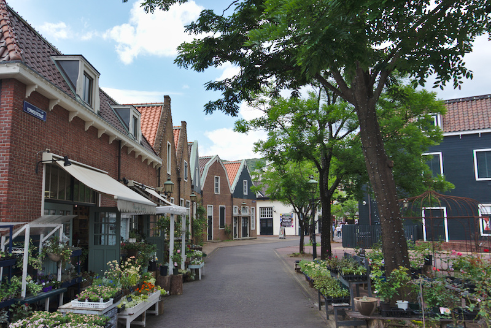

Deze dag zijn we vanaf Nagasaki een stuk naar het noorden gereisd om “Huis ten Bosch” te bezoeken. Dit is een ‘pretpark’ gebaseerd op Nederland! Het stond dus vol met typisch Nederlandse dingen, zoals windmolens, tulpen, grachten, herenhuizen, etc. Daarnaast zijn er een aantal bekende Nederlandse gebouwen een op een nagebouwd: De Dom, Kasteel Nijenrode, het stadhuis van Gouda. Echt heel erg bizar om te zien.
Trein naar Huis ten Bosch
Nederland in de bergen
Stadhuis Gouda en de Domtoren, in een keer!

Ah, de Vermeerstraat, wie kent ’m niet
Deze konden natuurlijk niet missen
Van Tante Annie natuurlijk
In de avond gingen ze helemaal los met lichten
Want zo ziet Nederland er typisch uit ‚Äôs avonds üòõ